Explore
Create
💗 Support
Github
Contributors
Rotate
Pan
Zoom
upload
Upload
help
or
Reference model
Human
Fox
Bird
Dragon
Load
Debug
help
Rotate Model to face front
(blue origin line)
X
Y
Z
If model is below the ground floor
Move
Skeleton template
Select a skeleton
Human
4 Leg Creature
Bird
Dragon
Hand Options
help
All Fingers
Thumb + Main Finger
All Fingers - Simplified
Single Hand Bone
Scale skeleton
help

100%
‹ Back
Edit Skeleton ›

Selected Bone:
None
Preview
Transform

Space

Mirror Left/Right Joints
Use Head Weight Correction
help
Height:
0.50
Skinning algorithm:
Closest Distance Targeting
Closest Bone
Closest Distance Child
‹ Back
Bind pose
0
Loading animation data
A-Pose Correction - Open Arms
help
%
‹ Back
save_alt
Download
0
No animation selected
play_arrow
0f
/
0f